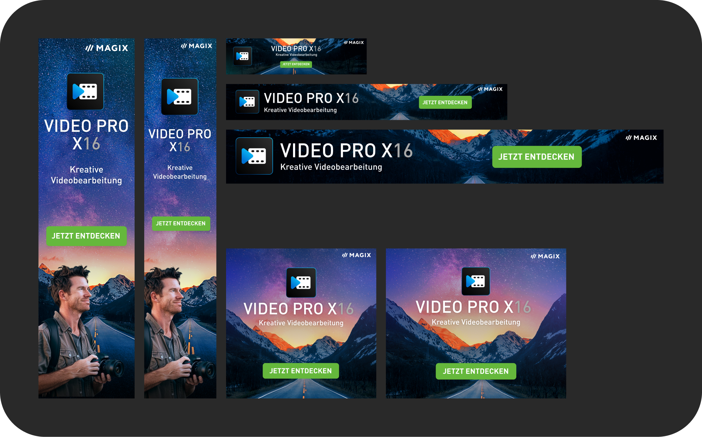

Video Pro X 16
Video Pro X16 ist ein Videobearbeitungsprogramm von MAGIX, das sich an fortgeschrittene Anwender richtet. In diesem Jahr wurde auch der Look von Video Pro X modernisiert, und ich war maßgeblich an dieser Neugestaltung beteiligt.


Neuheiten Webseite
Auf dieser Produktseite werden alle Neuerungen der aktuellen Version vorgestellt. In diesem Jahr durfte ich viel beim Layout mitwirken. Zudem habe ich viele der Grafiken gestaltet und das Videomaterial für den Header ausgewählt.
Release Mailing
Das Release-Mailing für Video Pro X16 zeigt im Header das neue Keyvisual und Icon. Darunter werden, wie bei allen anderen MAGIX Mailings auch, die neuen Features der Version vorgestellt.

Vorjahresversion
Die Seite der Vorjahresversion durfte ich layouten. Sie war eine der ersten Seiten, die wir jemals im „Mobile-First“-Ansatz gebaut haben. Da unser CMS sehr veraltet ist und die verfügbaren Bausteine oft nicht optimal für mobile Ansichten sind, war es eine Herausforderung, eine ansprechende mobile Version zu gestalten.

Ultimate Version
Video Pro X ist eines von zwei Programmen von MAGIX mit einer Ultimate-Version. Diese Version enthält das Hauptprogramm und zusätzlich viele Add-ons und Plugins. Es war eine kleine Herausforderung, all diese Inhalte übersichtlich auf einer Seite unterzubringen, aber ich finde, das ist uns durch das Layout gut gelungen. Ich habe hier beim Layout mitgeholfen, viele der Grafiken erstellt und war maßgeblich am Keyvisual beteiligt.
Affiliate Banner
Noch nicht genug?
Zu Video
Deluxe 2025

Zum Anfang

Hat dir gefallen, was du gesehen hast?
Let's work together


© Isabelle Borgwarth 2024